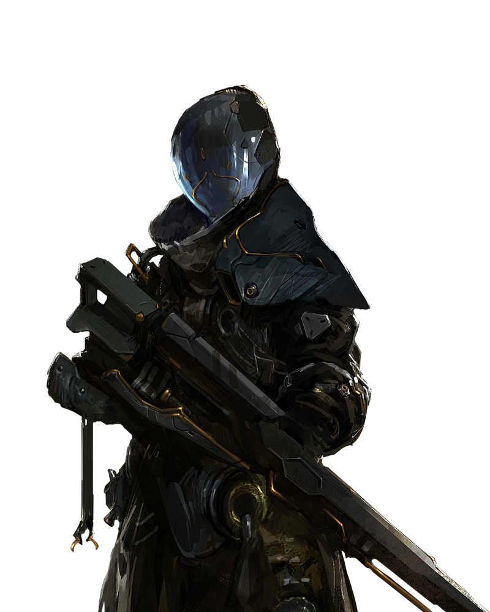

MORPHINAE
─ click to start ─
遊戲玩法
面對不死的敵人
普通的子彈不再管用，對付恆生物的方法只有捕捉或是限制行動。玩家必須透過各式各樣的科學武器，燃燒、麻痺、電擊、腐蝕、黏固，或是將目標絞成肉醬，好讓他們能在這些怪物復原之前有足夠時間完成任務。
草木皆兵的世界
在這個充斥著變種生物的世界，玩家必須時不時注意著周遭的死亡埋伏，一邊與難纏的野生動物周旋。畢竟當生物獲得智慧之後，連植物也可能嘗試取你性命。
有限的傳送節點
利用有限的傳送裝置，玩家必須在廣大的開放世界中，深思熟慮該如何規劃傳送點的布置。如果思考得當，便能在地圖上建立能夠快速往返的行動網，或是在情勢混亂的戰區架設能夠快速派遣援助的補給線。
環環相扣的選擇
恆生物會記得你對它們的所作所為，隨著遊戲時間前進，甚至會學會某些工具的使用方式，或是應對玩家的方法。所以選擇時必須當心，任何的決定都會影響你與該生物日後的關係發展，是要施以暴力
?
還是嘗試與對方溝通 ?
〈
〉
故事背景
遙遠殘破的未來
西元2318年，地球不再由人類主導，究竟漫長的世紀間發生了什麼事已無從考證，只剩下廢棄都市的殘垣斷壁隱約訴說著昔日的繁榮與輝煌。在這支離破碎的後末日世界中，失序又分裂的人類們如溝鼠般在廢墟殘骸中掙扎，除了為生存資源彼此爭鬥以外，他們還得面對更大的問題...
恆生物
基於某些原因，世界上的生物所擁有的基因不再被限制於單個功能，人們稱為基因的「解鎖」，甚至讓細胞擁有獨立思考、不會老化等能力，隨著演化，情況越發不可收拾，終於，出現了即使被解體、壓扁，只要還有一個細胞活著就不會死亡而且擁有智慧的「恆生物」，人們遭受這些生物的反撲，面臨滅亡。
閃蝶系統
在人類文明徹底毀滅之前，由各國政府共同合作研發的人工智慧，目的是在人類面臨滅亡危機時能夠找出解決方法。很顯然的，這項計畫並不順利，但這套系統至今仍維持正常運作，試圖在這些不死生物身上找出存續人類種族的解決辦法。閃蝶建立在高塔上，被設計成能夠永續維持整個系統的運作，直到找到解答的那一天。
探索者
閃蝶系統量產的人型機器人，在世界各地遊走、蒐集研究資料，同時保護毫無反抗能力的人類，利用閃蝶武器系統牽制或捕捉不死生物，持續影響著世界的發展。
角色介紹
長老
"長老"是從麋鹿一路突變而來的恆生物，比起一般的恆生物，它的外貌更接近於人類，且具有高度智商與溝通能力。長老被收容在閃蝶系統的實驗室裡，毫無反抗，也對於實驗測試表現出高度積極性。不過很多時候，還是難以判斷它到底在想甚麼。
遊蕩者──米茲
遊蕩者是由閃蝶設計的特殊人型機器人，它們存在的目的不是為了遵從閃蝶系統的指令，而是得以自己的判斷在世界上四處流浪，收集閃蝶系統忽略的資訊，以及產生自己的想法，到了一定時間閃蝶就會"回收"他們的數據。但近期遊盪者們的反抗行為越來越強烈，特別是自稱為"米茲"的個體，甚至開始表現出對閃蝶系統的攻擊性。

克里絲
克里絲是一名30多歲的人類女性，帶領著一群人在大陸上四處漂泊，即便只有血肉之軀，她優秀的戰略能力多次在捕獲難以對付的恆生物發揮了極大的用途。不過對克里絲來說，閃蝶或許也是她的獵物，大部分的工具和裝備都是從探索者身上拆下的。
羊男
一個極具威脅的個體，具有人類的輪廓以及草食性動物的特徵，似乎有能力引發恆生物的攻擊性，並誘使它們攻擊人類營地，有許多的人類營地因此遭到蹂躪，無人倖存。甚至連閃蝶的攻擊無人機也難以對付這個惡魔般的存在。
聯絡我們
閃電兔兔
email：taiwandanny123@gmail.com
phone：0905－718－252
phone：0905－718－252

Edison Wu
email：edisonwu2003@gmail.com
phone：0956－410－605
phone：0956－410－605